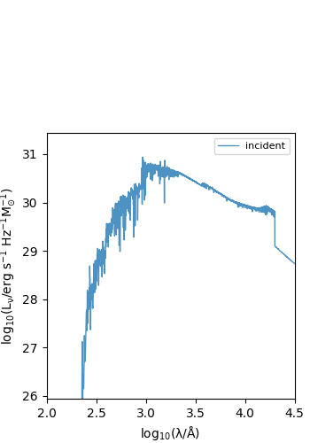
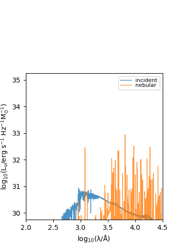
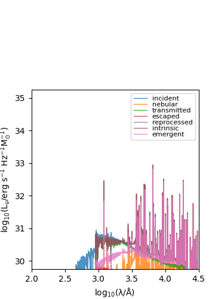
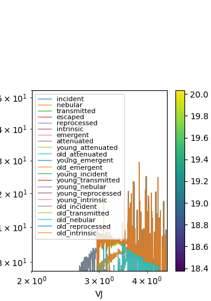

Note
Go to the end to download the full example code
CAMELS example#
Load CAMELS example data into a galaxy object
- 
- 
- 
- 
/opt/hostedtoolcache/Python/3.10.13/x64/lib/python3.10/site-packages/unyt/array.py:1802: RuntimeWarning: divide by zero encountered in log10
out_arr = func(np.asarray(inp), out=out_func, **kwargs)
{'U': unyt_quantity(1.52097684e+39, 'nJy'), 'V': unyt_quantity(6.28740448e+39, 'nJy'), 'J': unyt_quantity(1.2575133e+40, 'nJy')}
/home/runner/work/synthesizer/synthesizer/examples/cosmo/plot_camels.py:100: RuntimeWarning: divide by zero encountered in log10
mstar = np.log10(np.array([np.sum(_g.stars.initial_masses) for _g in gals]) * 1e10)
import os
import numpy as np
import matplotlib.pyplot as plt
from synthesizer.grid import Grid
from synthesizer.sed import Sed
from synthesizer.load_data import load_CAMELS_IllustrisTNG
from synthesizer.filters import UVJ
from synthesizer.particle.galaxy import Galaxy
if __name__ == "__main__":
# Get the location of this script, __file__ is the absolute path of this
# script, however we just want to directory
# script_path = os.path.abspath(os.path.dirname(__file__))
# Define the grid
grid_name = "test_grid"
# grid_dir = script_path + "/../../tests/test_grid/"
grid_dir = "../../tests/test_grid/"
grid = Grid(grid_name, grid_dir=grid_dir)
# now load some example CAMELS data using the dedicated data loader
gals = load_CAMELS_IllustrisTNG(
"../../tests/data/",
snap_name="camels_snap.hdf5",
fof_name="camels_subhalo.hdf5",
)
""" calculate the spectra for a single galaxy
here we set the `sed_object` flag to automatically assign
to an sed object """
_g = gals[0]
_spec = _g.get_spectra_incident(grid)
_g.plot_spectra()
plt.show()
# for label, _spec in _g.spectra.items():
# plt.loglog(_spec.lam, _spec.lnu, label=label)
# plt.xlabel('$\lambda \,/\, \\AA$')
# plt.ylabel('$L_{\\nu} \,/\, \mathrm{erg \; s^{-1} \; Hz^{-1}}$')
# plt.legend()
# plt.show()
spec = _g.get_spectra_nebular(grid)
_g.plot_spectra()
plt.show()
spec = _g.get_spectra_reprocessed(grid, fesc=0.1)
_g.plot_spectra()
plt.show()
spec = _g.get_spectra_screen(grid, tau_v=0.32)
_g.plot_spectra()
plt.show()
spec = _g.get_spectra_CharlotFall(grid, tau_v_ISM=0.33, tau_v_BC=0.67)
_g.plot_spectra()
plt.show()
""" multiple galaxies
Here we leave the `sed_object` flag as the default (False),
and combine into a single sed object afterwards """
_specs = np.vstack(
[
_g.get_spectra_CharlotFall(grid, tau_v_ISM=0.33, tau_v_BC=0.67)._lnu
for _g in gals
]
)
_specs = Sed(lam=grid.lam, lnu=_specs)
plt.loglog(grid.lam, _specs.lnu.T)
plt.xlabel("$\lambda \,/\, \\AA$")
plt.ylabel("$L_{\\nu} \,/\, \mathrm{erg \; s^{-1} \; Hz^{-1}}$")
plt.show()
""" calculate broadband luminosities """
# first get rest frame 'flux'
_spec.get_fnu0()
# define a filter collection object (UVJ default)
fc = UVJ(new_lam=grid.lam)
_UVJ = _spec.get_broadband_fluxes(fc)
print(_UVJ)
""" do for multiple, plot UVJ diagram """
# first filter by stellar mass
mstar = np.log10(np.array([np.sum(_g.stars.initial_masses) for _g in gals]) * 1e10)
mask = np.where(mstar > 8)[0]
_specs = np.vstack(
[
gals[_g].get_spectra_CharlotFall(grid, tau_v_ISM=0.33, tau_v_BC=0.67)._lnu
for _g in mask
]
)
_specs = Sed(lam=grid.lam, lnu=_specs)
_specs.get_fnu0()
_UVJ = _specs.get_broadband_fluxes(fc)
UV = _UVJ["U"] / _UVJ["V"]
VJ = _UVJ["V"] / _UVJ["J"]
plt.scatter(VJ, UV, c=mstar[mask], s=40)
plt.xlabel("VJ")
plt.ylabel("UV")
plt.colorbar(label="$\mathrm{log_{10}} \, M_{\star} \,/\, \mathrm{M_{\odot}}$")
plt.show()
Total running time of the script: (0 minutes 1.054 seconds)